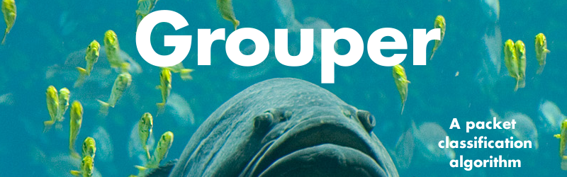

Overview
Grouper is an algorithm for classifying network packets. It can handle policies specified as arbitrary bitmasks over packet data (extended versions can also handle ranges). Grouper is flexible in the amount of memory it needs and can directly trade memory for classification speed. The algorithm is conceptually simple, performs well on worst-case rule sets, and has an open-source prototype implementation.
Contributors
Chris Gage
Publications
A Packet-classification Algorithm for Arbitrary Bitmask Rules, with Automatic Time-space Tradeoffs. Jay Ligatti, Josh Kuhn, and Chris Gage. Proceedings of the IEEE International Conference on Computer Communication Networks (ICCCN), August 2010. [ BibTeX]
Slides
Grouper-talk.pptx, by Josh Kuhn and Jay Ligatti. Josh received a Student Travel Grant to attend ICCCN 2010 and present this talk.
Download
The Grouper prototype is written in C and is made available under the
AGPLv3.
It has been tested on Arch Linux x86_64, but should compile and run on any
modern 64-bit Linux distribution. Instructions on compiling and using
Grouper and its associated utilities are included in the package.
Grouper Source Code, version 0.5
Acknowledgement
This material is based upon work supported by the National Science Foundation under Grant Nos. CNS-0716343 and CNS-0742736. Any opinions, findings, conclusions, or recommendations expressed in this material are those of the authors and do not necessarily reflect the views of the National Science Foundation.